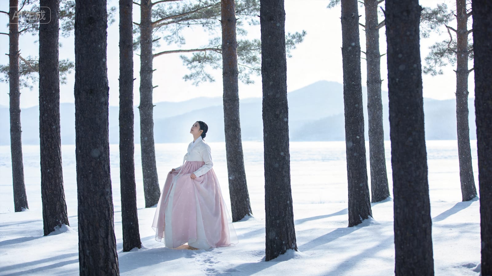
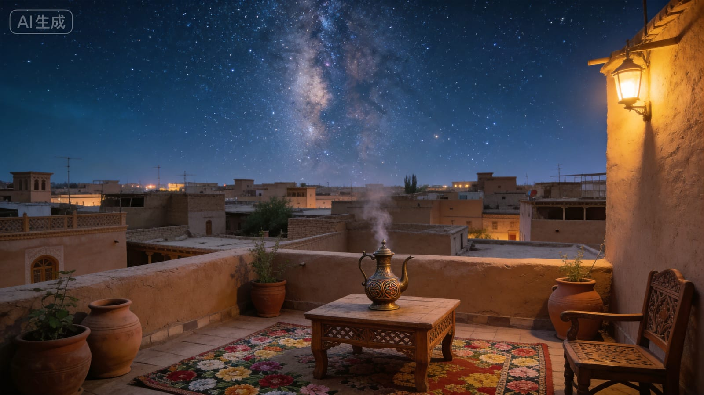

城市声音档案
江边
Pearl River Sound Stamp
已采集
一个以小提琴串联中国民族音乐的数字声音档案。从东北到西南，从西北边疆到岭南海岸，每一首作品都是一个地域、一段文化的声音切片。本项目由广府本土小提琴演奏者梁珏童策划与制作。 A digital sound archive that threads China's ethnic music together through the violin. From the Northeast to the Southwest, from the western frontier to the Lingnan coast, each work is a sonic slice of a region and its culture — curated and produced by Liang Juetong, a Cantonese violinist.
“扎恩达勒”在达斡尔语里意为“民歌”，是国家级非物质文化遗产。作曲家深入达斡尔族聚居地采集原生态曲调，用小提琴的双音、和弦与泛音重新谱写，呈现达斡尔民歌悠长而奔放的美，也拉出“落日万山寒，萧萧猎马还”的苍茫画面。
In the Daur language, “Zandale” means “folk song,” a tradition recognised as national intangible cultural heritage. The composer collected original melodies in Daur communities, then rewrote them for violin using double stops, chords and harmonics — capturing both the soaring lines of Daur folk song and the vast image of hunters riding home against a cold mountain sunset.
+ 走进达斡尔 · 一个音乐人的听觉笔记我的老师李泽熙在创作这首作品时，深入达斡尔族聚居地采集原生态曲调，再用小提琴的双音、和弦与泛音把它重新写出来。达斡尔人的世界，声音是辽阔的——呼伦贝尔草原上，马蹄踏过草浪、风穿过白桦林，牧人即兴哼起的曲调没有谱子，想到哪唱到哪，正如曲中小提琴自由游走的散板。这里的柳蒿芽汤、手把肉就着马奶酒，是大口吃肉、大声唱歌的豪爽。当琴弓拉出那悠长的呼喊，其实是在用一件西方乐器，贴近一种对着天地歌唱的本能。
When my teacher Li Zexi composed this piece, she travelled into Daur communities to collect original folk melodies, then rewrote them for violin using double stops, chords and harmonics. In the Daur world, sound is vast — on the Hulunbuir grasslands, hooves brush through waves of grass and wind moves through birch forests. A herder's improvised tune follows no score, sung as it comes, just as the violin wanders freely here. Willow-shoot soup, hand-held mutton and mare's milk wine speak of a frank, open life: eat heartily, sing loudly. As the bow draws out that long call, a Western instrument reaches toward an instinct — to sing to the open land.

《长白松》取材朝鲜族传统民歌，借用其特有的“长短”节奏。小提琴运用连跳弓、拨弦等技巧，音符清亮，描摹长白山“美人松”的优雅——它在严寒中依然挺拔，正是朝鲜族坚韧品格的写照。
“Changbai Pine” draws on traditional Korean-Chinese folk music, borrowing its distinctive jangdan rhythmic patterns. Through spiccato and pizzicato, the violin renders bright tones portraying the elegance of the “Beauty Pine” of Changbai Mountain — a mirror of the resilience of the Korean ethnic people.
+ 走进长白山 · 一个音乐人的听觉笔记老师取材朝鲜族传统民歌，借用其特有的长短节奏，让小提琴在连跳弓与拨弦间，描摹长白山美人松的优雅。延边的朝鲜族村落里，伽倻琴的清音、长鼓的鼓点、节庆时的农乐舞，都带着这种富于弹性、张弛有致的呼吸感。打糕、冷面、辣白菜，是这片土地朴素又鲜明的味道。美人松在严寒中四季常青、挺拔不屈——当琴音清亮地立起来，听见的正是这种在寒冷里依然向上的坚韧。
My teacher drew on traditional Korean-Chinese folk music, borrowing its distinctive jangdan rhythmic patterns, letting the violin sketch the elegance of Changbai's Beauty Pine through spiccato and pizzicato. In the Korean villages of Yanbian, the clear tones of the gayageum, the beat of the janggu drum, and festival farmers' dances all carry this elastic, breathing sense of rhythm. Rice cakes, cold noodles and kimchi are the plain yet vivid flavours of this land. The Beauty Pine stands green and upright through the harshest cold — and when the violin's tone rises, bright and clear, what we hear is that same resilience reaching upward in the cold.

《喀什噶尔星空》写的是南疆。喀什噶尔是古丝绸之路上一片绵延千年的古老绿洲，作曲家融入爵士乐的“切弓”（chopping）弓法，让节奏由慢到快、音色明暗交织，描绘一幅穿越千年的璀璨星河。
“Kashgar Starry Sky” depicts southern Xinjiang, an ancient Silk Road oasis. The composer incorporates the jazz “chopping” bowing technique, building rhythm from slow to fast to paint a brilliant galaxy across a thousand years of history.
+ 走进喀什噶尔 · 一个音乐人的听觉笔记老师写的是南疆——喀什噶尔，丝绸之路上一片绵延千年的古老绿洲。她融入爵士乐的“切弓”（chopping）弓法，让节奏由慢到快、音色明暗交织，像一幅穿越千年的星河。喀什老城的巴扎集市里，都塔尔与热瓦普的弹拨、铜匠敲打的叮当、烤包子出炉的吆喝，与十二木卡姆那宏大热烈的音响交织在一起。土黄色的民居、头顶璀璨的银河——当琴音由静谧转向奔放，听见的是这座千年古城在夜色里依然跳动的脉搏。
My teacher wrote of southern Xinjiang — Kashgar, an ancient Silk Road oasis alive for a thousand years. She wove in the jazz chopping bowing technique, building rhythm from slow to fast, light and shadow interlacing like a galaxy across millennia. In the bazaars of Kashgar's old city, the plucking of the dutar and rawap, the clang of coppersmiths and the calls of baked-bun sellers intertwine with the grand, fervent sound of the Twelve Muqam. Earth-yellow houses, a brilliant Milky Way overhead — as the music turns from stillness to abandon, we hear the pulse of this ancient city still beating in the night.
《洱海泛舟》以白族文化为底色，描绘洱海山水与人和谐相依的意境。旋律舒缓清澈，如轻舟荡漾于湖光山色之间，呈现苍山洱海间宁静、灵秀的南国气韵。
“Boating on Erhai Lake” is grounded in Bai ethnic culture, evoking the harmony between people and the landscape of Erhai Lake, with flowing, limpid melodies conveying the serene, graceful spirit of the South.
+ 走进洱海 · 一个音乐人的听觉笔记老师以白族文化为底色，写洱海山水与人和谐相依的意境，旋律舒缓清澈，如轻舟荡漾。大理的白族村落里，三道茶的一苦二甜三回味、扎染布上晕开的蓝、本主庙会上的洞经古乐，都透着一种从容的慢。苍山雪、洱海月，下关风、上关花——白族人把山水写进了日子里。当琴音如水般流淌，听见的是一种与天地相处得格外松弛的南国气韵。
My teacher grounded this piece in Bai ethnic culture, evoking the harmony between people and the landscape of Erhai Lake, its melody flowing and clear like a drifting boat. In the Bai villages of Dali, the three-course tea — bitter, sweet, then lingering — the indigo blooming across tie-dyed cloth, and the ancient Dongjing music at temple fairs all carry an unhurried calm. Cangshan snow and Erhai moon, the wind of Xiaguan and flowers of Shangguan — the Bai people have woven landscape into daily life. As the music flows like water, we hear a southern serenity, a uniquely relaxed way of being with the world.
把岭南城市文化做成一个轻量小游戏：点击城市地点，收集五枚声音印记，最后进入岭南作品。
Click the city spots, collect five sound stamps, and enter the Lingnan works.
《丰收渔歌》由李自立创作，取材广东汕尾的渔歌，借鉴古筝琶音技法，把渔民出海归来的丰收喜悦写进小提琴。这首曲子我小学就拉过，却是到大学为它写下并发表英文论文，才真正读懂它——从把音拉对，到读懂它背后的潮汕海洋文化。它是我作为演奏者，也作为研究者，最珍视的一首岭南作品。
Composed by Li Zili, drawing on the fishing songs of Shanwei. I first played it as a child, but only understood it at university when I published an English research paper on it. As both performer and researcher, it is the Lingnan work I treasure most.
+ 走进潮汕 · 一个演奏者与研究者的笔记丰收渔歌由李自立创作，取材广东汕尾的渔歌，借古筝琶音的技法，把渔民出海归来的喜悦写进小提琴。我小学就拉过它，却是到大学为它写下英文论文，才真正读懂它。潮汕是著名侨乡：工夫茶的精致、潮剧的婉转、牛肉丸的弹牙、潮州音乐的古朴典雅——这片向海而生的土地，把对丰收的盼望、对海洋的敬畏，都唱进了渔歌里。当琴弓模仿出收网时那串明亮的琶音，听见的是一整片海岸的生计与欢腾。
Harvest Fishing Song, composed by Li Zili, draws on the fishing songs of Shanwei in eastern Guangdong, bringing the joy of a returning catch onto the violin through guzheng-like arpeggios. I first played it as a child, but only understood it at university when I wrote an English research paper on it. Chaoshan is a famous homeland of overseas Chinese: the refinement of gongfu tea, the lilt of Chaoju opera, the bounce of handmade beef balls, the antique elegance of Chaozhou music — this seaward land sings its hope for harvest and reverence for the ocean into its fishing songs. As the bow imitates that bright cascade of arpeggios pulling in the nets, we hear the livelihood and jubilation of an entire coast.
《旱天雷》是广东音乐的经典，旋律明快灵动，模拟旱天惊雷的清脆与生机。对很多广府人来说，它是一段不用刻意记、却早已刻进生活的旋律——就连在广州地铁里，都能听到它的变奏。它是我这一代广州人共同的听觉记忆。
A classic of Cantonese music, bright and nimble, imitating thunder in a dry season. You can even hear its variations in the Guangzhou metro — part of the shared sonic memory of my generation.
+ 走进广府 · 一个广府人的听觉记忆旱天雷是广东音乐的经典，旋律明快灵动，模拟旱天惊雷的清脆生机。对广府人来说，它是不用刻意记、却早已刻进生活的旋律——连广州地铁里都能听到它的变奏。广东音乐以高胡、扬琴、秦琴主奏，曲调清新流畅、装饰繁密；它生长在早茶的喧腾、骑楼的市声、凉茶铺的苦香之间。这是一座把生活过得很有声音的城市——当琴音跳跃如雷，听见的是广府人骨子里那股鲜活、机灵又乐天的劲。
Thunder in a Dry Sky is a classic of Cantonese music, bright and nimble, imitating the crisp vitality of thunder in a dry season. For Cantonese people, it is a melody never deliberately memorised yet long woven into daily life — you can even hear its variations in the Guangzhou metro. Cantonese music, led by gaohu, yangqin and qinqin, is fresh, fluid and densely ornamented; it grows amid the bustle of morning tea, the street noise beneath the arcades, the bitter fragrance of herbal-tea shops. This is a city that lives out loud — as the music leaps like thunder, we hear the lively, quick-witted, optimistic spirit in the Cantonese bones.
《步步高》是广东音乐中最喜庆、最广为流传的曲目之一，旋律层层递进、节节攀升，寓意生活越过越好。小时候看广东卫视，逢年过节几乎都能听到它。对广府人来说，它就是“好意头”和节庆气氛本身。
One of the most festive Cantonese pieces, its melody climbs ever higher, symbolising a life that keeps getting better. For Cantonese people, it is the very sound of good fortune.
+ 走进广府节庆 · 一个广府人的听觉记忆步步高旋律层层递进、节节攀升，寓意生活越过越好。小时候看广东卫视，逢年过节几乎都能听到它。在广府，音乐与节庆密不可分：春节的醒狮腾跃、行花街的人潮、开业时的锣鼓——步步高因步步高升的好意头，成了这些喜庆时刻最常响起的曲子。它不只是一首乐曲，更是广府人对美好生活的集体祝愿。当琴音一节节往上攀，听见的是一座城市对明天会更好的笃定相信。
Rising Step by Step climbs ever higher, symbolising a life that keeps getting better. Growing up watching Guangdong TV, I heard it during nearly every festival. In the Cantonese world, music and celebration are inseparable: the leaping lion dances of New Year, the crowds at the flower markets, the gongs and drums at shop openings — with its auspicious meaning of rising higher, this piece became the sound of these joyful moments. It is more than a melody; it is the Cantonese people's collective wish for a good life. As the music climbs note by note, we hear a city's firm belief that tomorrow will be better.
《木棉盛开时》是我的老师李泽熙创作的作品。木棉是广州的市花，被称为“英雄花”。这首曲子让我看到，岭南音乐不只是旧的传统，它仍在生长——我的老师正在写它的当下，而我作为她的学生，也成了这条传承里的一环。
Composed by my teacher, Li Zexi. The kapok is the city flower of Guangzhou, the “hero flower.” This piece shows me that Lingnan music is still growing — and as her student, I have become part of this living lineage.
+ 走进当代广州 · 传统仍在生长木棉盛开时是我的老师李泽熙创作的作品。木棉是广州市花，每年早春先花后叶、满树火红，被称为英雄花，象征着这座城市热烈向上的性格。在传统广东音乐之外，当代作曲家持续以岭南为题材进行新的创作——这首曲子正是这种传统仍在生长的当代回声。从骑楼到珠江新城的天际线，广州始终在新旧之间生长。当琴音明亮地绽放，听见的是岭南音乐没有停在过去，而是被我们这一代继续书写下去。
When the Kapok Blooms was composed by my teacher Li Zexi. The kapok is Guangzhou's city flower, blossoming fiery red across bare branches each early spring — the hero flower, emblem of this city's ardent, upward spirit. Beyond traditional Cantonese music, contemporary composers keep creating new works rooted in Lingnan — and this piece is the present-day echo of a tradition still growing. From the old arcades to the skyline of Zhujiang New Town, Guangzhou keeps growing between old and new. As the music blooms bright, we hear that Lingnan music has not stayed in the past, but is being written onward by our generation.
你可以留下一张声音手信，也可以轻轻挥手，与这次展览告别。
观众完成声音印记或看完作品后，可以留下一句听后回声，并生成一张带有广东手信印章的纪念明信片。